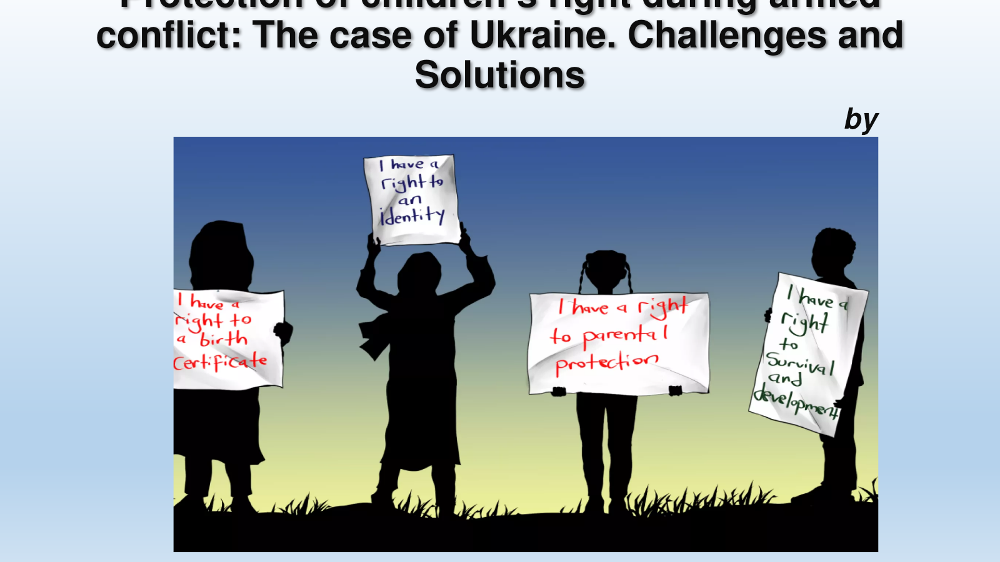

Concept and Types of Systematization of Legislation
A comprehensive analysis of legislative systematization, including codification, consolidation, incorporation, accounting of normative acts, and selected foreign approaches.
View publicationResearch Library
This collection brings together Hanna Kotyk's research on legislative systematization, juvenile law, child protection, international standards, and comparative legal-policy development.
View Hanna Kotyk on Google ScholarFeatured Presentation
The Case of Ukraine: Challenges and Solutions
An 18-slide presentation examining the impact of armed conflict on children, the unlawful transfer and deportation of Ukrainian children, the applicable international legal framework, and practical avenues for accountability, advocacy, humanitarian cooperation, and national response.

Open the full presentation →Current Research Editions
The current research library includes Draft 4.0 of the Model Juvenile Justice Act suite and the Phase I ten-state U.S. State Juvenile Justice Statutory Index.
Complete twelve-module research edition with companion Commentary and Analytical Report. Published August 2, 2026.
Explore Draft 4.0 suite Comparative Statutory ResearchPhase I expanded ten-state research edition with statutory mapping, Model Act comparison notes, and verification protocol. Published August 10, 2026.
View the 10-state index Development ArchiveOriginal two-state New York–Texas sample dated August 1, 2025, preserved as the development precursor to the ten-state edition.
View the historical sampleA comprehensive analysis of legislative systematization, including codification, consolidation, incorporation, accounting of normative acts, and selected foreign approaches.
View publicationA comparative study of how different legal systems shape gender and juvenile policy and the formation and protection of women's and children's rights.
View publicationExamines Ukraine's implementation of international obligations addressing child trafficking and kidnapping and identifies prospective directions for improving national legal safeguards.
View publicationExplores incorporation as a method for harmonizing existing laws and regulations and as a practical principle for the efficient codification of juvenile legislation.
View publicationAnalyzes the Convention's formal and substantive construction, legal algorithms, drafting features, and universal role in protecting children's rights and development.
View publicationDefines the methods, stages, subject composition, and intellectual tools used to consolidate fragmented juvenile normative material into a coherent legal act.
View publicationReviews developments in Ukrainian child-rights legislation and the state's legal obligations to protect children's welfare, safety, development, and equal rights.
View publicationExamines legal systematization as a response to conflicts, gaps, repetition, and inconsistent terminology within large and evolving bodies of law.
View publicationMaps the constitutional, family, civil, criminal, social-service, and child-welfare laws that collectively form Ukraine's legal framework for childhood protection.
View publicationPublication dates shown here reflect the confirmed dates of the original publications. English-language research editions retain the source attribution and are provided for academic discovery and access.
Flagship Application
The Model Juvenile Justice Act translates long-term research on juvenile legislation, child protection, legal technique, and comparative reform into a complete twelve-module resource for state-level analysis.
Explore the Model Act →